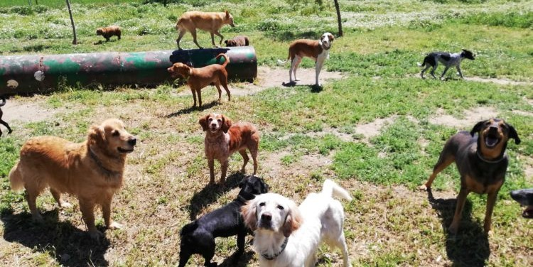
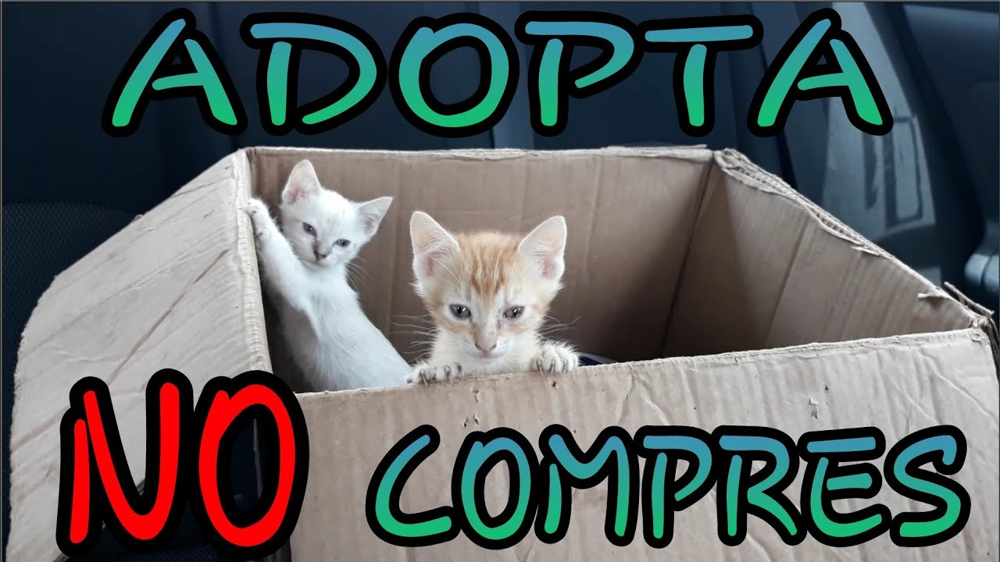
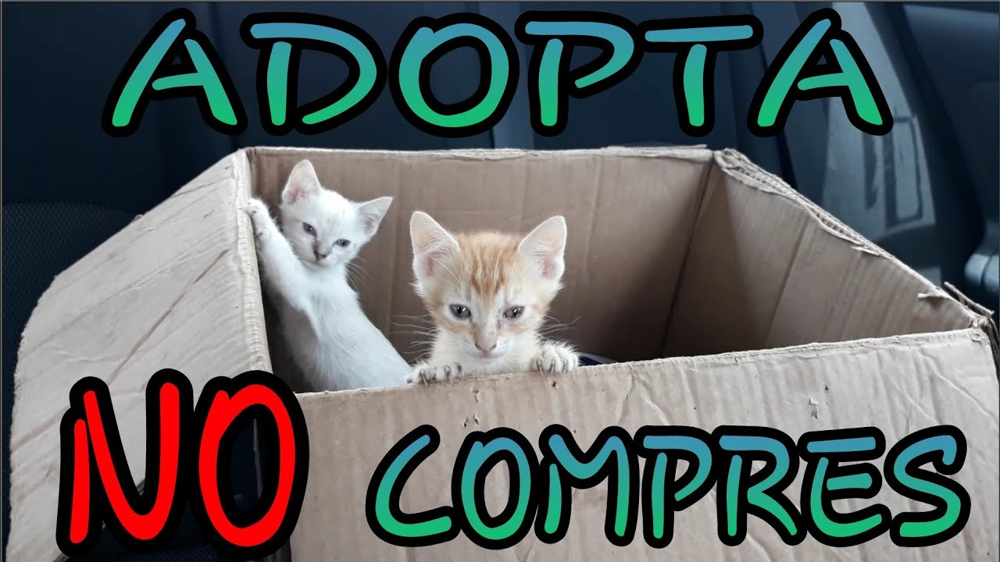

¡Bienvenidos!
Refugio de mascotas "XX", donde trabajamos incansablemente para brindar un hogar amoroso y seguro a animales
que han sido abandonados, maltratados o perdidos.
En nuestro refugio, nuestro principal objetivo es
ofrecer un ambiente cómodo y seguro para los animales mientras esperan ser adoptados por familias amorosas.
Creemos que todos los animales merecen una segunda oportunidad y trabajamos arduamente para asegurarnos de que
cada uno de nuestros residentes reciba el cuidado y el amor que merecen.

 
